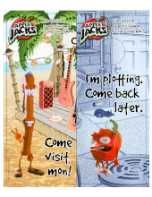
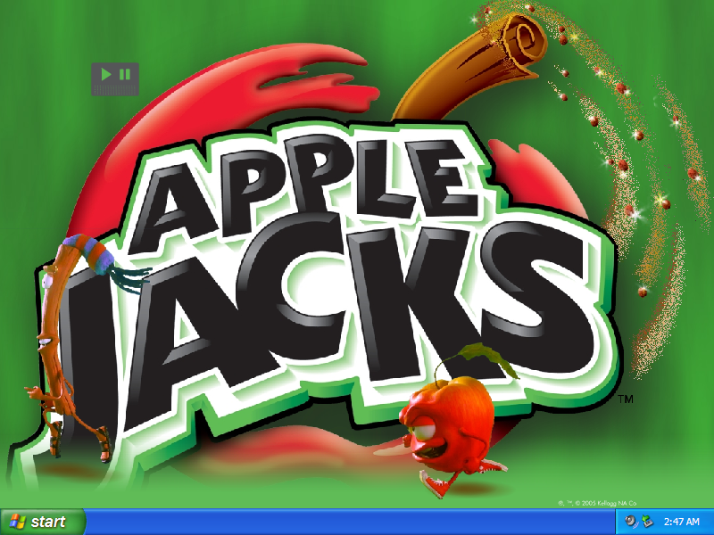

Apple Jacks Downloads
Apple Jacks Printable
Door Hanger

.pdf file (7.45 MB)
Apple Jacks Interactive Wallpaper

DOWNLOAD
.exe file zipped (Windows) (3.20 MB)
.sit file (Mac OS X) (3.45 MB)
 .pdf file (7.45 MB)
.pdf file (7.45 MB) .pdf file (7.45 MB).exe file zipped (Windows) (3.20 MB).sit file (Mac OS X) (3.45 MB)
.pdf file (7.45 MB).exe file zipped (Windows) (3.20 MB).sit file (Mac OS X) (3.45 MB)